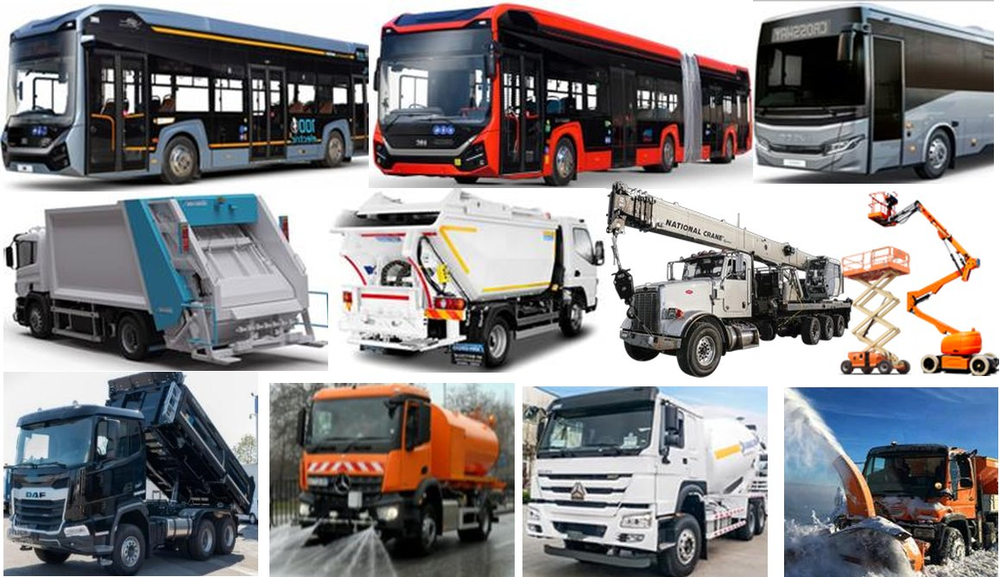

ECOES КОНВЕРСИИ НА АВТОБУСИ, КОМУНАЛНИ И СТРОИТЕЛНИ КАМИОНИ
Вземете оферта за конверсия на автобуси и камиони
ECOES електрическата конверсия е сложен инженерен процес, който включва замяна на дизеловия двигател с електродвигател PMSM с течно охлаждане в комбинация с автоматична скоростна кутия, както и модификация на кормилната, спирачната, електрическата, хидравличната и климатичната система, трансмисията, вала за отбор на мощност (PTO) и всички други системи, свързани с функционалността и безопасността на превозното средство.
Процесът на ECOES електрическа конверсия на нови транспортни средства и друга техника не включва производство на нови машини от нулата. Вместо това се използват нови или употребявани, серийно произвеждани машини с дизелов двигател — доказали своята надеждност и ефективност в реална експлоатация — и дизеловите им двигатели се заменят с електрически.
Електрическата конверсия обхваща камиони с максимална обща маса (GVW) от 7 000 кг до 40 000 кг, в стандартно и високопроходимо изпълнение, с колесни формули, включително 4x2, 4x4, 6x2, 6x4, 6x6 и 8x4.
При автобусите конверсия е възможна за градски и междуградски автобуси с дължина до 12 метра и за съчленени автобуси с дължина до 18 метра. Възможността за конверсия е ограничена от конструкцията на превозното средство и вариантите за разполагане на батериите.
ECOES JV предлага комплектни електрически камиони ECOES с различни надстройки — товарни, самосвални, комунални, строителни, селскостопански и други.
За производителите на надстройки предлагаме електрически базови шасита на изключително конкурентни цени. Всички базови шасита са с произход от ЕС и отговарят на стандарта ЕВРО 6.
Всеки камион, преминал ECOES електрическа конверсия, може по избор да бъде оборудван с авариен модул за движение без захранване от основните батерии. Има два вида аварийни модули: генераторен и батериен.
- Аварийният генераторен модул се състои от специално проектиран генератор 400V AC, който чрез софтуер и зарядно устройство захранва батериите на превозното средство, за да осигури аварийна работа и придвижване до зарядна станция.
- Аварийният батериен модул се състои от отделна батерия, която не е свързана с основния батериен пакет, задвижващ електрическото превозно средство (например камион, автобус или друго). Когато енергията в основния батериен пакет се изчерпи, водачът превключва превозното средство на резервната батерия, която осигурява достатъчен пробег до зарядна станция.
Аварийният модул за движение, който работи независимо от основните батерии, решава най-сериозния проблем пред електрическите камиони:
- Какво става, когато основната батерия се изтощи?
- Електрическите камиони ECOES продължават да се движат!
ЕЛЕКТРИЧЕСКИТЕ КАМИОНИ ECOES ЕВРО 6 ПРЕДЛАГАТ НАЙ-НИСКАТА ЦЕНА И СПОСОБНОСТ ДА РАБОТЯТ БЕЗ ЗАХРАНВАНЕ ОТ ОСНОВНИТЕ БАТЕРИИ. С ТЕЗИ ФИНАНСОВИ И ТЕХНИЧЕСКИ ВЪЗМОЖНОСТИ МОЖЕТЕ ДА СПЕЧЕЛИТЕ ВСЕКИ ТЪРГ.
Вземете оферта